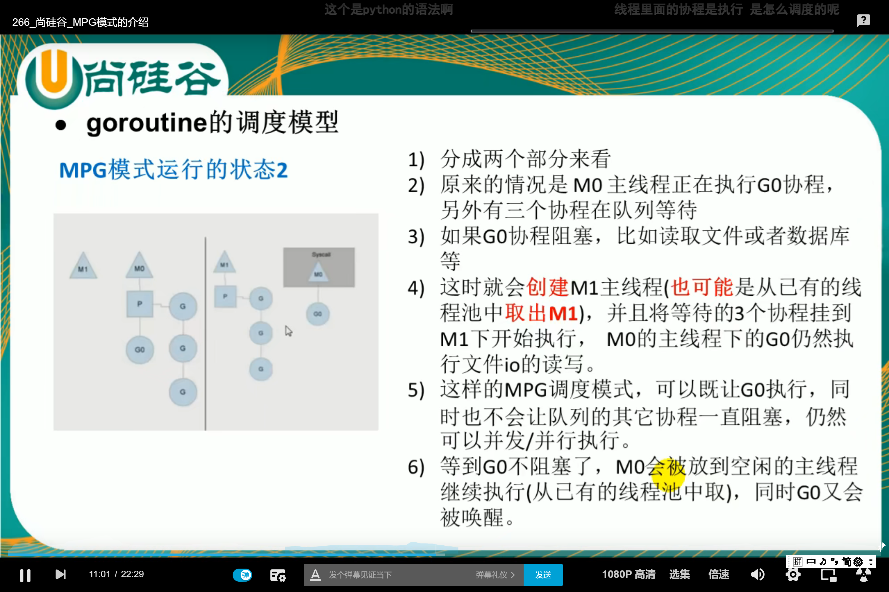
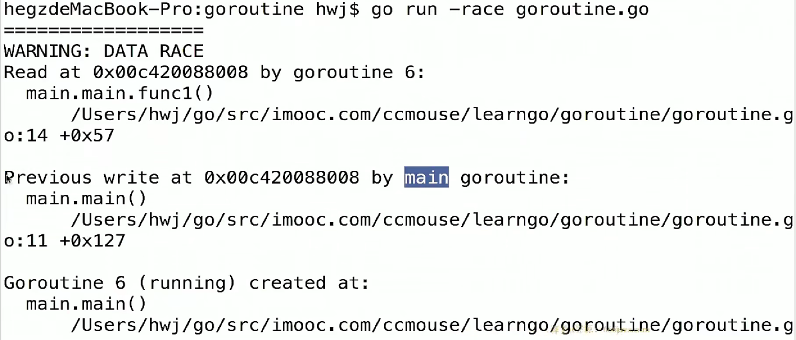

11 Goroutine 协程和调度模型
主程序和协程的执行流程
有一个程序，在主线程（进程）中开启一个goroutine，该协程每隔1秒输出"hello,world"，在主线程中也每隔1秒钟输出"hello,world"。输出10次之后退出程序。要求主线程和goroutine同时执行。
func test(){
for i := 1;i <= 10; i++{
fmt.Println("test () hello world" + strconv.Itoa(i))
time.Sleep(time.Second) //休息一秒
}
}
func main(){
go test()
for i := 1; i<=10 ; i++{
fmt.Println(" main() hello,golang" + strconv.Itoa(i))
time.Sleep(time.Second)
}
}
结果显示:
可以发现是主函数一次，test函数一次，交叉执行。
mian 1
test 1
main 2
test 2
main 3
test 3
...


主线程是一个物理线程，是直接作用在CPU上面的，是重量级的，非常耗费CPU资源，协程从主线程开始的，是轻量级的线程，处于逻辑态，对资源的消耗相对小，Golang的协程机制是重要的特点，可以轻松的开启上万个协程，其他编程语言的并发机制是一般基于线程的，开启过多的线程，那么资源的消耗会非常大，所以Golang在并发上相比于其他的语言具有巨大的优势。
Go协程和Go主线程的简单案例分析:
package main
import "fmt"
func main() {
for i := 0; i<10;i++ {
go func(i int){
for{
fmt.Printf("Hello from"+
"goroutine %d\n",i)
}
}(i)
}
}
来看这一串代码，结果什么都没显示就退出了。
原因是:
并发执行main 和 for func并发执行 还没来得及打印东西，main就退出了。
应该在main函数的末尾加上time.Sleep(time.Millisecond)
package main
import (
"fmt"
"time"
)
func main() {
for i := 0; i < 1000; i++ {
go func(i int){
for{
fmt.Printf("Hello from"+
"goroutine %d\n",i)
}
}(i)
}
time.Sleep(time.Millisecond)
}
总结，协程就是：
- 轻量级“线程”
- 非抢占式多任务处理，由协程主动交出控制权
- 解释器/编译器/虚拟机层面的多任务
- 多个协程可能在一个或者多个线程上运行
goroutine与线程的区别
1、使用方面：
（1）goroutine比线程更加轻量级，可以轻松创建十万、百万，不用担心资源问题
（2）goroutine与channel搭配使用，能够更加方便的实现高并发
2、实现方面：
（1）从资源上讲
1. 线程栈的内存大小一般固定为2MB
2. goroutine栈内存是可变的，初始的时候一般为2KB，最大可以扩大到1GB
（2）从调度上讲
1. 线程的调度由操作系统的内核完成
2. goroutine调度由自身的调度器完成
3、goroutine与线程的联系：
（1）多个goroutine绑定在同一个线程上面，按照一定的调度算法执行
goroutine调度模型MPG
1、M
代表一个在操作系统的主线程，所有的G(goroutine)任务最终都会在M上执行
2、P（Processor）
是协程的上下文环境，所谓的上下文环境指的就是当时运行过程中的操作系统的一个状态，指代了当时环境中所存在的资源条件。P可以根据实际情况开启协程去工作。
- 代表⼀个处理器，每个运行的M都必须绑定⼀个P。P的个数是GOMAXPOCS，最大为256，在程序启动时固定，一般不去修改。
- GOMAXPOCS默认值是当前电脑的核心数，单核CPU就只能设置为1，如果设置>1，在GOMAXPOCS函数中也会被修改为1。
- M和P的个数不一定一样多，M>=P，每⼀个P都会保存本地的G任务队列，另外还有一个全局的G任务队列。G任务队列可以认为线程池中的线程队列。
3、G（Goroutine）
- 代表⼀个goroutine协程对象，每次go调用的时候都会创建⼀个G对象


简单理解就是：假设有个厨子在炒菜，A先要了一百个菜，但是B和C只点了一个小炒菜。这时候当A的菜在煲汤的时候，厨子就可以先去把B和C的菜炒了，这样就能防止阻塞。
设置运行的CPU数

package main
import "runtime"
func main(){
cpuNum := runtime.NumCPU()
runtime.GOMAXPROCS(cpuNum-1)//预留一个CPU
}
案例分析
package main
import (
"fmt"
"time"
)
func main() {
for i := 0; i < 10; i++ {
go func(i int){ //匿名函数开启协程，把外面的参数i传进去打印
for{
fmt.Printf("Hello from goroutine %d\n",i)//交不出控制权，就死在了里面
}
}(i)
}
//time.Sleep(time.Millisecond)
}
如果没有加 go func 的 go 就会一直打印 Hello from goroutine 0。加了之后，就就什么都不会打印就直接退出来，main和go func并发执行，还来不及print，主函数的i到10就执行完了。这时候，我们需要取消time.Sleep(time.Millisecond)的注释，这样就能保证，每次i++的时候，可以print hello。
上面的打印是IO操作，是交出来控制权的。但是下面的这个代码并没有。
package main
import (
"fmt"
"time"
)
func main() {
var a [10]int
for i := 0; i < 10;i++ {
go func(i int){ //匿名函数开启协程
for{
a[i]++//交不出控制权，就死在了里面
}
}(i)
}
time.Sleep(time.Millisecond)
fmt.Println(a)
}
在这种情况下运行，会占满CPU。
可以在后面加上runtime.Gosched()
package main
import (
"fmt"
"runtime"
"time"
)
func main() {
var a [10]int
for i := 0; i < 10;i++ {
go func(i int){
for{
a[i]++
runtime.Gosched() //手动交出控制权
}
}(i)//这说明了匿名函数里面的i是取自外面for循环里面的i
}
time.Sleep(time.Millisecond)
fmt.Println(a)
}
取消i的传参，看看会发生什么事情。
package main
import (
"fmt"
"runtime"
"time"
)
func main() {
var a [10]int
for i := 0; i < 10;i++ {
go func(){
for{
a[i]++
runtime.Gosched() //手动交出控制权
}
}()
}
time.Sleep(time.Millisecond)
fmt.Println(a)
}
报错！
go run -race goroutine.go
-race检测数据访问的冲突
可以发现

报错解释：
这个i和第11行的i形成了一个闭包，当i=10跳出循环的时候，a[i]仍用了i=10，这时候a[10]就数组越界了，所以就出错了。
更新: 2022-02-10 14:49:09
原文: https://www.yuque.com/xiaoshan_wgo/codingnotes/xgw26a